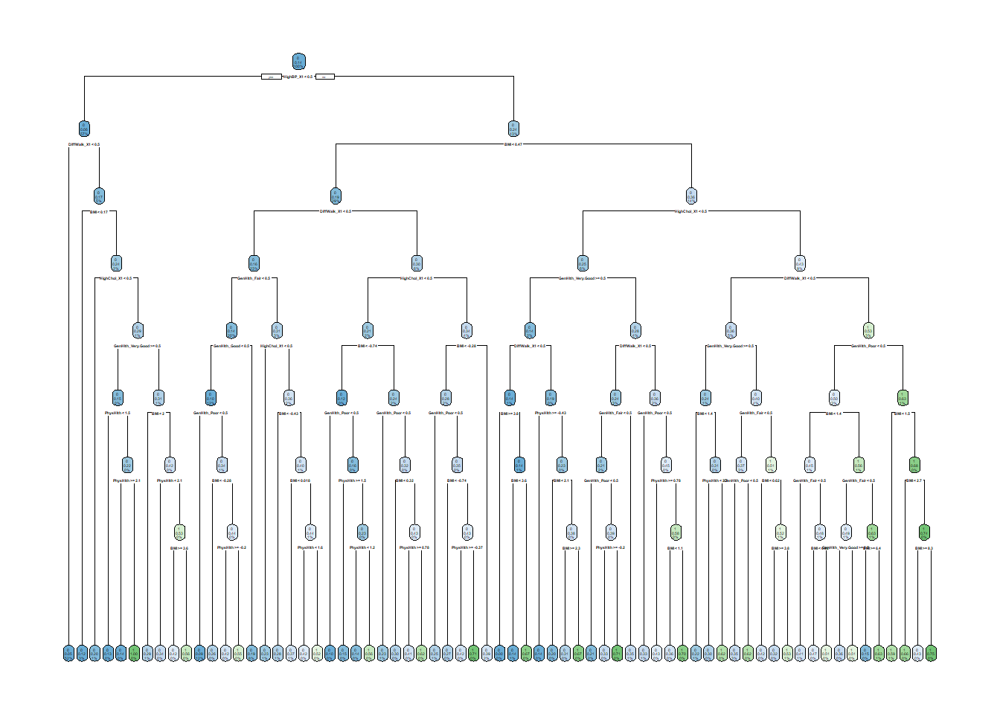

set.seed(42)
diabetes_split <- initial_split(diabetes, prop = 0.7)
diabetes_train <- training(diabetes_split)
diabetes_test <- testing(diabetes_split)Modeling
Introduction
Using a subset of variables from the Diabetes Health Indicators Dataset, two types of tree-based models will now be trained on a training set using 5-fold CV. Training data will be used to assess the log-loss of a classification tree model and a random forest model. The best parameters from each will be selected and then fit on the test set to determine which model is best. That final model will then be fit to the entire dataset, and an API will be set up with three endpoints. The first endpoint will return a prediction of diabetes status based on the input parameters; the second endpoint will provide my name and the github URL; and the third will show a plot of the confusion matrix for the final model.
Setup
Data needs to be split, with 70% training and 30% testing
Set up CV folds
diabetes_CV_folds <- vfold_cv(diabetes_train, 5)Recipe
Numeric predictors will be standardized, and dummy variables will be created for the binary and categorial variables.
tree_rec <- recipe(Diabetes_binary ~ GenHlth + HighBP + HighChol + DiffWalk +
BMI + PhysHlth,
data = diabetes_train) |>
step_normalize(all_numeric()) |>
step_dummy(GenHlth, HighBP, HighChol, DiffWalk)
tree_rec |>
prep(diabetes_train) |>
bake(diabetes_train)# A tibble: 177,576 × 10
BMI PhysHlth Diabetes_binary GenHlth_Very.Good GenHlth_Good GenHlth_Fair
<dbl> <dbl> <fct> <dbl> <dbl> <dbl>
1 -0.209 -0.486 0 1 0 0
2 -0.209 -0.486 0 1 0 0
3 -0.510 -0.486 0 0 0 0
4 1.15 -0.371 0 1 0 0
5 1.75 -0.486 0 0 0 1
6 -0.661 -0.486 0 0 0 0
7 -0.661 -0.486 0 0 0 0
8 0.546 2.96 0 0 0 1
9 -0.0578 -0.486 0 0 1 0
10 1.45 -0.256 0 0 1 0
# ℹ 177,566 more rows
# ℹ 4 more variables: GenHlth_Poor <dbl>, HighBP_X1 <dbl>, HighChol_X1 <dbl>,
# DiffWalk_X1 <dbl>Classification Tree
A classification tree is a supervised learning model that attempts to predict the value of a categorical response variable based on the values of one or more predictor variables. It does this by partitioning the predictor space into different branches, ultimately arriving at a prediction for the response variable. These branches are created using recursive binary splitting, which determines the optimal split for the current node only. The best split is determined by minimizing the squared error loss evaluated for each potential value of the predictors. Since it does not consider potential future splits, this can result in the tree missing out on a better match down the line that could have led to more accurate predictions. However, the classification tree is easy to understand, and is an effective and flexible model for situations where the data does not conform well to a line or plane.
Set up Model and Workflow
Model for classification tree, with tuning parameters
tree_mod <- decision_tree(tree_depth = tune(),
min_n = 10,
cost_complexity = tune()) |>
set_engine("rpart") |>
set_mode("classification")Workflow
tree_wkf <- workflow() |>
add_recipe(tree_rec) |>
add_model(tree_mod)Tuning parameters
Set up a tuning grid
tree_grid <- grid_regular(cost_complexity(),
tree_depth(),
levels = c(10, 5))Run tuning on the specified grid
tree_fits <- tree_wkf |>
tune_grid(resamples = diabetes_CV_folds,
grid = tree_grid,
metrics = metric_set(accuracy, mn_log_loss))Get the best parameters
tree_best_params <- select_best(tree_fits, metric = "mn_log_loss")
tree_best_params# A tibble: 1 × 3
cost_complexity tree_depth .config
<dbl> <int> <chr>
1 0.0000000001 8 Preprocessor1_Model21Refit on the training set
tree_final_fit <- tree_wkf |>
finalize_workflow(tree_best_params) |>
last_fit(diabetes_split, metrics = metric_set(accuracy, mn_log_loss))
tree_final_fit |>
collect_metrics()# A tibble: 2 × 4
.metric .estimator .estimate .config
<chr> <chr> <dbl> <chr>
1 accuracy binary 0.865 Preprocessor1_Model1
2 mn_log_loss binary 0.342 Preprocessor1_Model1Final Model
tree_final_model <- extract_workflow(tree_final_fit)
tree_final_model |>
extract_fit_engine() |>
rpart.plot::rpart.plot(roundint = FALSE)Warning: labs do not fit even at cex 0.15, there may be some overplotting
Random Forest
A random forest model is a supervised learning ensemble method that utilizes bootstrapping to generate many single trees to predict a response variable based on the values of one or more predictor variables. Bootstrapping is a method of resampling the data with replacement; in a random forest model, those samples are then used to fit many trees, and the best prediction across all trees is chosen. For regression trees, the best prediction is the average of all predictions, and for classification trees, the best prediction is the most common one. In a random forest model, only a random subset of predictors is considered for each split of a single tree. This makes the different trees less correlated with each other, which has the potential to improve the overall accuracy of the prediction by reducing the variance between the predictions of the single trees.
Set up Model and Workflow
# model specifications
rf_model <- rand_forest(mtry = tune()) |>
set_engine("ranger") |>
set_mode("classification")
# workflow using same recipe already set up
rf_wkf <- workflow() |>
add_recipe(tree_rec) |>
add_model(rf_model)Tuning parameters
Tune on a grid with 10 values
rf_fit <- rf_wkf |>
tune_grid(resamples = diabetes_CV_folds,
grid = 10,
metrics = metric_set(accuracy, mn_log_loss))i Creating pre-processing data to finalize unknown parameter: mtryWarning: package 'ranger' was built under R version 4.4.2Select best parameters
rf_best_params <- rf_fit |>
select_best(metric = "mn_log_loss")
rf_best_params# A tibble: 1 × 2
mtry .config
<int> <chr>
1 4 Preprocessor1_Model9Final Model
Finalize the workflow
rf_final_fit <- rf_wkf |>
finalize_workflow(rf_best_params) |>
last_fit(diabetes_split, metrics = metric_set(accuracy, mn_log_loss))Warning: package 'ranger' was built under R version 4.4.2Compare Models
Compare the log loss for both models
rf_metrics <- rf_final_fit |>
collect_metrics() |>
bind_cols(method = rep("Random Forest", 2))
tree_metrics <- tree_final_fit |>
collect_metrics() |>
bind_cols(method = rep("Classification Tree", 2))
rf_metrics |>
bind_rows(tree_metrics)# A tibble: 4 × 5
.metric .estimator .estimate .config method
<chr> <chr> <dbl> <chr> <chr>
1 accuracy binary 0.865 Preprocessor1_Model1 Random Forest
2 mn_log_loss binary 0.325 Preprocessor1_Model1 Random Forest
3 accuracy binary 0.865 Preprocessor1_Model1 Classification Tree
4 mn_log_loss binary 0.342 Preprocessor1_Model1 Classification TreeThe accuracy of each model is roughly the same, but Random Forest has a marginally better log loss, so this one is the overall winner.
Fit Best Model to Entire Data
Fit the best model to the entire data set, for use by the API.
# model specifications (using the optimal mtry value found during tuning)
rf_model <- rand_forest(mtry = 4) |>
set_engine("ranger") |>
set_mode("classification")
# workflow
rf_wkf <- workflow() |>
add_recipe(tree_rec) |>
add_model(rf_model)
# fit best model on entire data set
rf_fit_full <- rf_wkf |>
fit(diabetes)
# save model for later use
saveRDS(rf_fit_full, file = "rf_fit_model.rda")Also saved the confusion matrix, since it’s a tad long-running
# save the confusion matrix
rf_conf_mat <- conf_mat(diabetes |> mutate(estimate = rf_fit_model |>
predict(diabetes) |> pull()),
Diabetes_binary,
estimate)
saveRDS(rf_conf_mat, file = "rf_conf_matrix.rda")